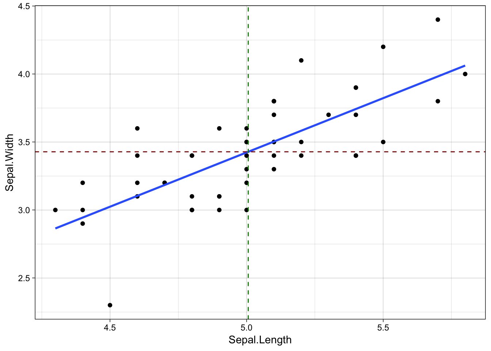
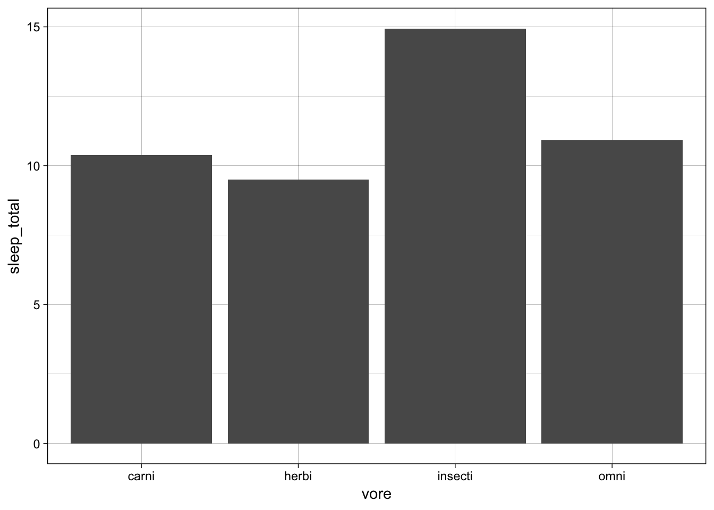
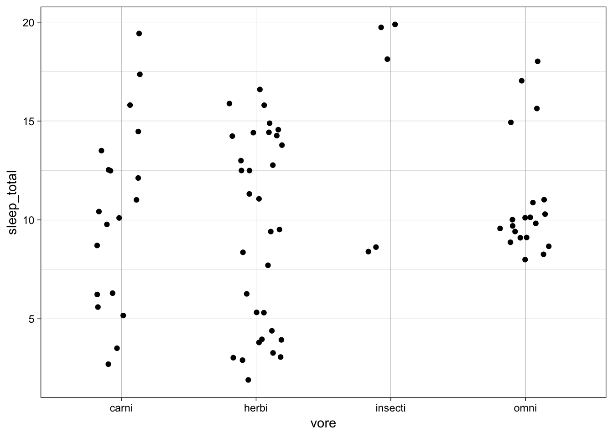
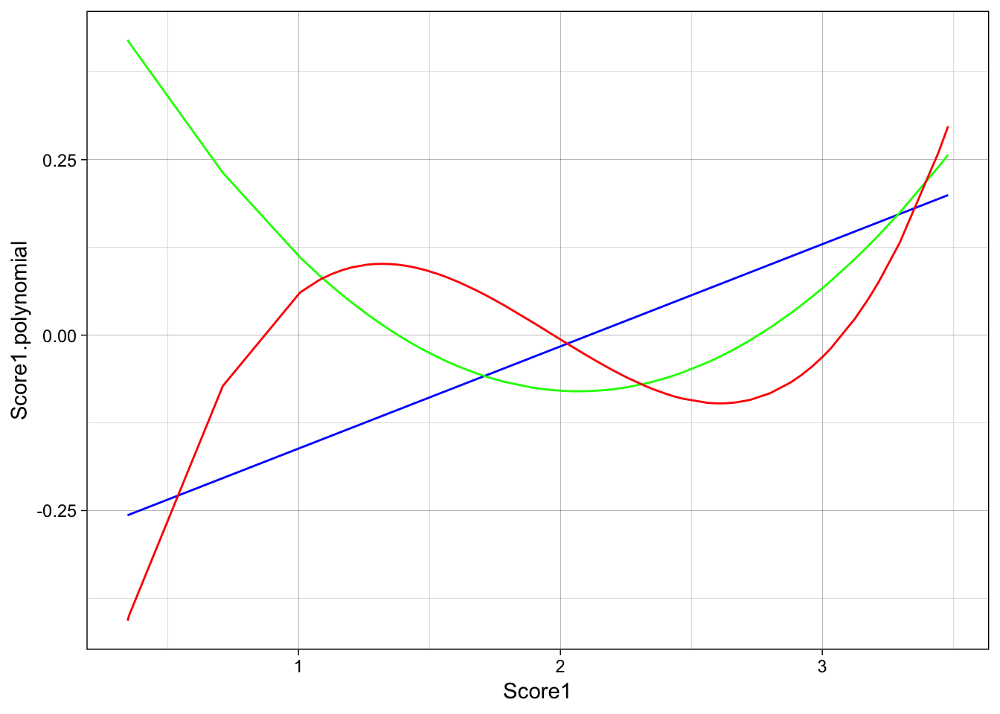
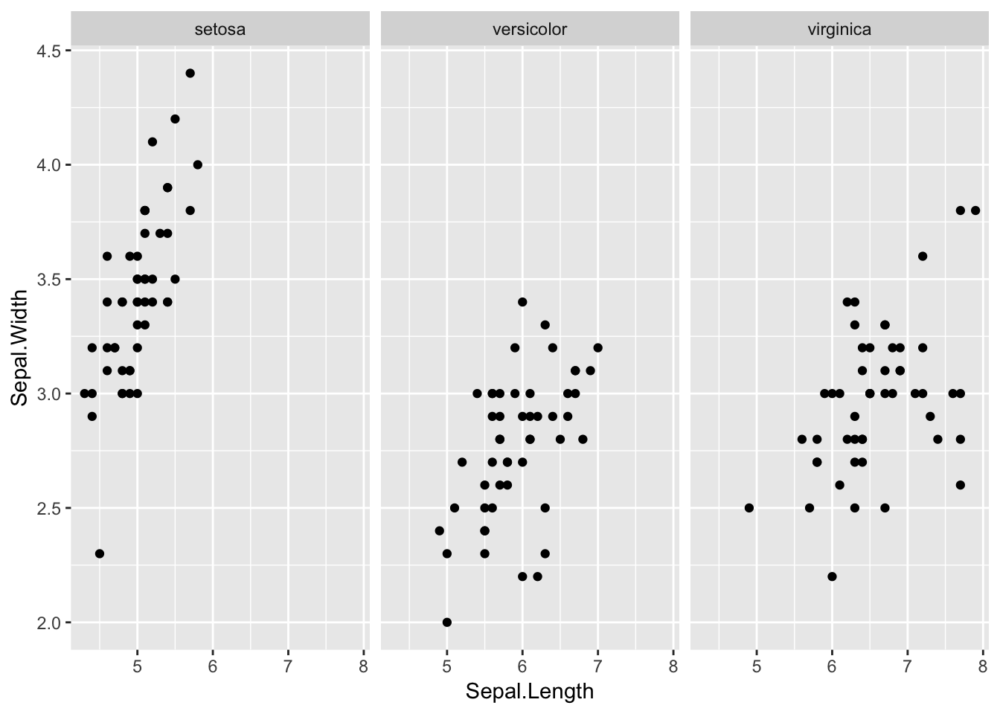
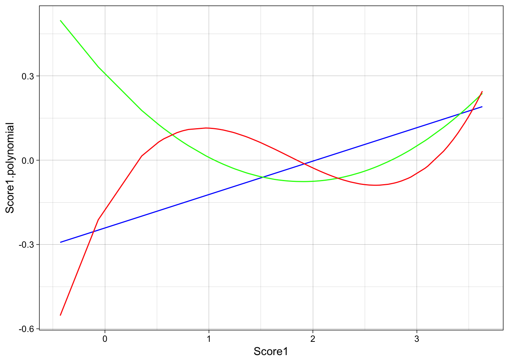
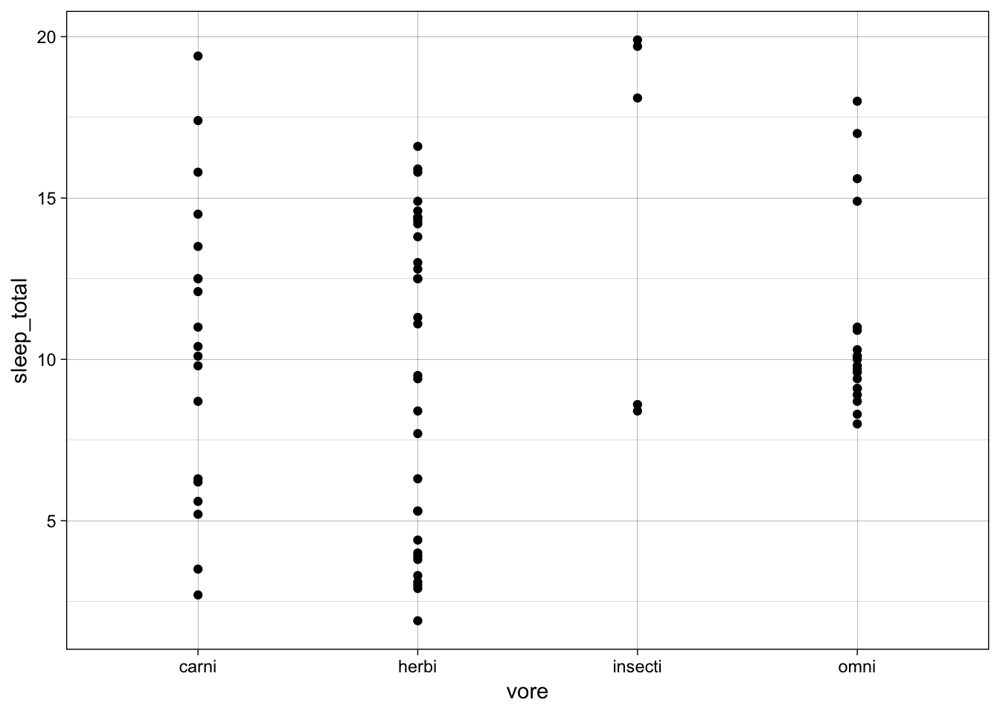
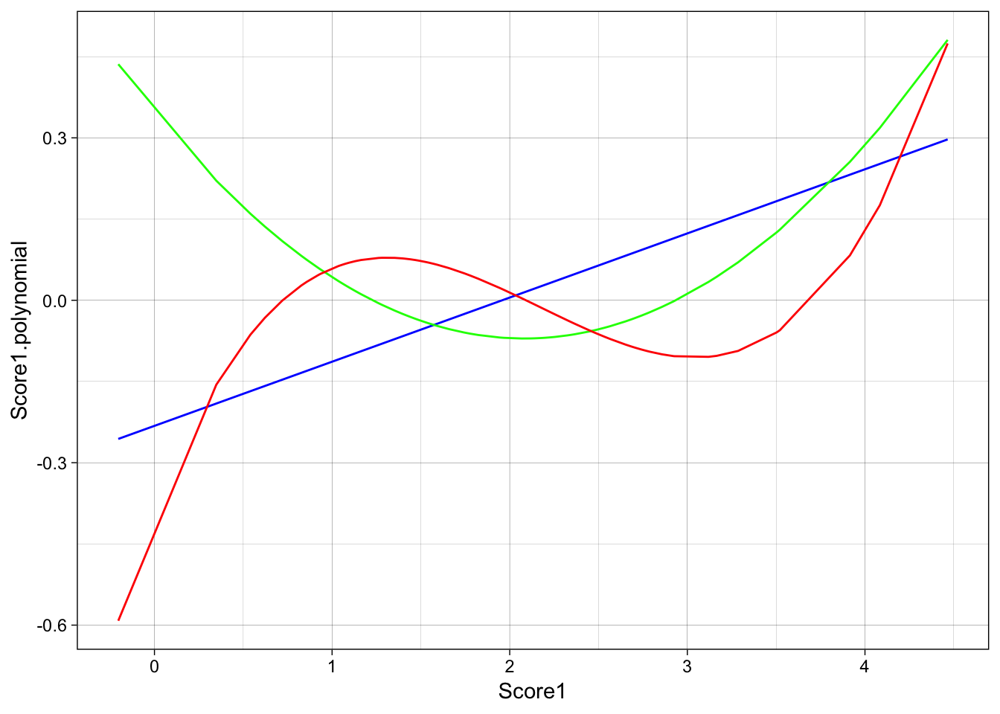
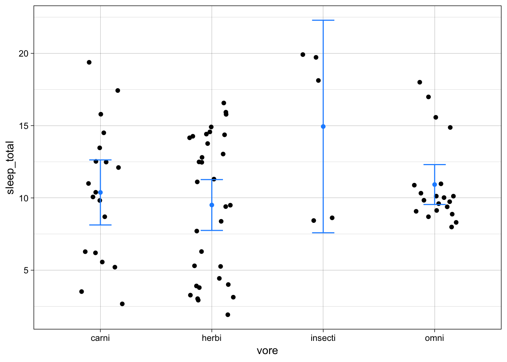
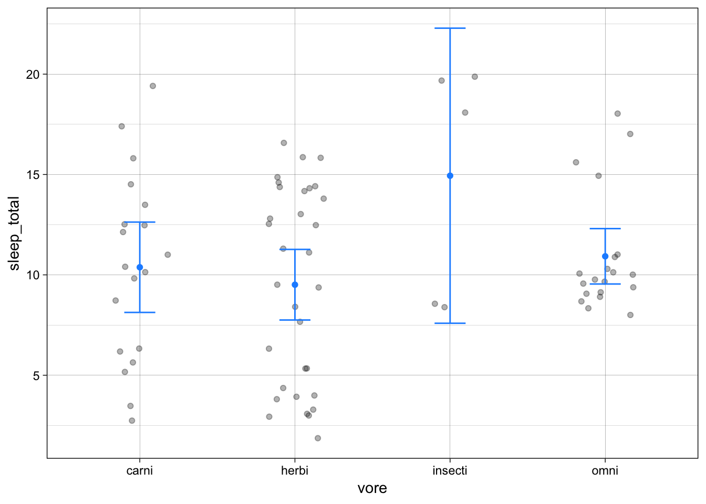

Chapter 13 ggplot2

13.1 Grammar of Graphics
We saw from the last chapter that the two main components in a grammar of graphics are:
Graphics = distinct layers of grammatical elements
Meaningful plots through aesthetic mappings
13.2 Grammar Elements
13.2.1 Data layer
The first grammatical element is the data layer.

Let’s see what this means more concretely with an example data set. A very popular data set used for teaching data science is the iris data set. In this data set various species of iris were measured on their sepal and petal length and width.
This data set actually comes preloaded with R, so you can simply view it by typing in your console
View(iris)head(iris)## Sepal.Length Sepal.Width Petal.Length Petal.Width Species
## 1 5.1 3.5 1.4 0.2 setosa
## 2 4.9 3.0 1.4 0.2 setosa
## 3 4.7 3.2 1.3 0.2 setosa
## 4 4.6 3.1 1.5 0.2 setosa
## 5 5.0 3.6 1.4 0.2 setosa
## 6 5.4 3.9 1.7 0.4 setosaWe can see that this data is in wide format. What type of graph we can visualize will depend on the format of the data set. On occassion, in order to visualize a certain pattern of the data will require you to change the formating of the data.
Let’s go ahead and start building our graphical elements in ggplot2. Load the ggplot2 library. Then:
library(ggplot2)
ggplot(data = iris)
You can see that we only have a blank square. This is becuase we have not added any other layers yet, we have only specified the data layer.
13.2.2 Aesthetic Layer
The next grammatical element is the aesthetic layer, or aes for short.

The aesthetic layer maps variables in our data onto scales in our graphical visualization, such as the x and y coordinates. In ggplot2 the aesthetic layer is specified using the aes() function. Let’s create a plot of the relationship between Sepal.Length and Sepal.Width, putting them on the x and y axis respectively.
ggplot(iris, aes(x = Sepal.Length, y = Sepal.Width))
You can see we went from a blank box to a graph with the variable and scales of Sepal.Length mapped onto the x-axis and Sepal.Width on the y-axis.
However, there is no data yet :( What are we to do?
13.2.3 Geometries Layer
The next essential element for data visualization is the geometries layer or geom layer for short.

Just to demonstrate to you that ggplot2 is creating R graphic objects that you can modify and not just static images, let’s assign the previous graph with data and aesthetics layers only onto an R object called p, for plot.
p <- ggplot(iris, aes(x = Sepal.Length, y = Sepal.Width))Now let’s say we want to add the individual raw data points to create a scatterplot. To do this we can use the function geom_point(). This is a geom layer and the type of geom we want to add are points.
In ggplot2 there is a special notation that is similar to the pipe operator %>% seen before. Except it is plus sign +
p + geom_point()
And walla! Now we have a scatterplot of the relationship between Sepal.Length and Sepal.Width. Cool.
If we look at the scatterplot it appears that there are at least two groups or clusters of points. These clusters might represent the different species of flowers, represented in the Species column. There are different ways we can visualize or separate this grouping structure.
First, we will consider how to plot these species in separate plots within the same visualization.
13.2.4 Facets Layer
The facet layer allows you to create subplots within the same graphic

The previous three layers are the essential layers. The facet layer is not essential, however given your data you may find it helps you to explore or communicate your data.
Let’s create facets of our scatterplot by Species
ggplot(iris, aes(Sepal.Length, Sepal.Width)) +
geom_point() +
facet_wrap(~ Species)
13.2.5 Statistics Layer
The statistics layer allows you plot statistical values calculated from the data

So far we have only plotted the raw data values. However, we may be interested in plotting some statistics or calculated values, such as a regression line, means, standard error bars, etc.
Let’s add a regression line to the scatterplot. First without the facet layer then with the facet layer
ggplot(iris, aes(Sepal.Length, Sepal.Width)) +
geom_point() +
stat_smooth(method = "lm", se = FALSE)
ggplot(iris, aes(Sepal.Length, Sepal.Width)) +
geom_point() +
facet_wrap(~ Species) +
stat_smooth(method = "lm", se = FALSE)
13.2.6 Coordinates Layer
The coordinate layer allows you to adjust the x and y coordinates

You can adjust the min and max values, as well as the major ticks. This is more useful when you have separate graphs (non-faceted) and you want to plot them on the same scale for comparison.
This is actually a very important deisgn principle in data visualization. If you want to compare two separate graphs, then they should be on the same scale!!!
library(dplyr)
ggplot(filter(iris, Species == "setosa"), aes(Sepal.Length, Sepal.Width)) +
geom_point() +
stat_smooth(method = "lm", se = FALSE)
ggplot(filter(iris, Species == "versicolor"), aes(Sepal.Length, Sepal.Width)) +
geom_point() +
stat_smooth(method = "lm", se = FALSE)
library(dplyr)
ggplot(filter(iris, Species == "setosa"), aes(Sepal.Length, Sepal.Width)) +
geom_point() +
stat_smooth(method = "lm", se = FALSE) +
coord_cartesian(xlim = seq(4, 8, by = 1), ylim = seq(2, 5, 1))
ggplot(filter(iris, Species == "versicolor"), aes(Sepal.Length, Sepal.Width)) +
geom_point() +
stat_smooth(method = "lm", se = FALSE) +
coord_cartesian(xlim = seq(4, 8, by = 1), ylim = seq(2, 5, 1))
ggplot(filter(iris, Species == "virginica"), aes(Sepal.Length, Sepal.Width)) +
geom_point() +
stat_smooth(method = "lm", se = FALSE) +
coord_cartesian(xlim = seq(4, 8, by = 1), ylim = seq(2, 5, 1))